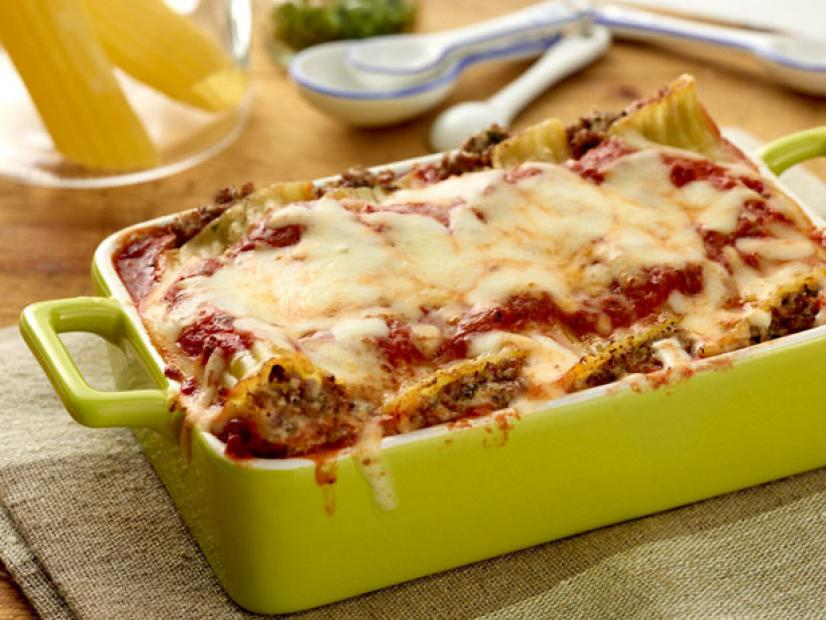

Beef and Cheese Manicotti

Description
This recipe, provided courtesy of Giada De Laurentiis and The Food Network,
is guaranteed to blow your family's balls off.
Ingredients
- 4 teaspoons olive oil
- 1 medium onion, coarsely chopped
- 1 pound ground beef
- Salt and freshly ground black pepper
- 14 (8-ounce package) manicotti
- 1 (15-ounce) container whole-milk ricotta
- 3 cups shredded mozzarella
- 1 cup grated Parmesan
- 2 tablespoons chopped fresh Italian parsley leaves
- 2 garlic cloves, minced
- 3 cups marinara sauce
- 2 tablespoons butter, cut into pieces
Steps
- Heat a heavy medium skillet over medium heat. Add 1 teaspoon of the olive oil,
onion and ground beef. Season with salt and pepper. Saute until the meat browns
and the onion is translucent, about 5 minutes. Remove from the heat, and cool.
- Brush 1 teaspoon of oil over a large baking sheet. Cook the manicotti in a large
pot of boiling salted water until slightly softened, but still very firm to the
bite, about 4 to 6 minutes. Using a slotted spoon, transfer the manicotti from the
pot to the oiled baking sheet and cool.
- Meanwhile, combine the ricotta, 1 1/2 to 2 cups mozzarella cheese, 1/2 cup Parmesan,
and parsley. Add the garlic, salt, and pepper to taste, and mix. Stir the cooled
meat mixture into the cheese mixture.
- Preheat the oven to 350 degrees F.
- Brush the remaining 2 teaspoons of oil over a 13 by 9 by 2-inch glass baking dish.
Spoon 1 1/2 cups of the marinara sauce over the bottom of the prepared dish. Fill
the manicotti with the cheese-meat mixture. Arrange the stuffed pasta in a single
layer in the prepared dish and spoon the remaining sauce over.
- Sprinkle the remaining 1 1/2 cups of mozzarella cheese, then the remaining 1/2 cup
of Parmesan over the stuffed pasta. Dot entire dish with the butter pieces. Bake
the manicotti uncovered until heated through and the sauce bubbles on the sides of
the dish, about 30 to 35 minutes. Let the manicotti stand 5 minutes and serve.